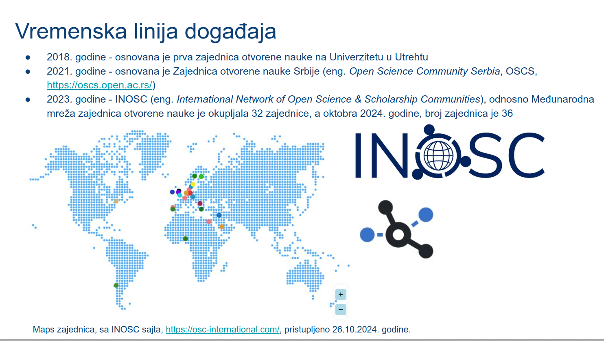

Slajd iz prezentacije, koja je održana tokom Dana otvorene nauke V, https://doi.org/10.5281/zenodo.14185169
Zajednica otvorene nauke Srbije (eng. Open Science, Community Serbia, skraćeno OSCS) je predstavljena tokom tokom konferencije Dan otvorene nauke V, koji je obeležen u rektoratu Univerziteta u Beogradu, 5. novembra 2024. godine. U okviru dve sesije, tokom Dana otvorene nauke, predstavljeni su Projekti, mreže i inicijative, u koje su uključeni istraživači i bibliotekari Republike Srbije u protekle dve godine, predstavljena je i Zajednica otvorene nauke Srbije.
Zajednica otvorene nauke Srbije (eng. Open Science Community Serbia) je osnovana 2021. godine i deli ideju vodilju, odnosno osnovne principe sa zajednicama širom sveta, koje sve zajedno okuplja Međunarodna mreža zajednica otovrene nauke (eng. International Network of Open Science & Scholarship Communities, INOSC).
Za članstvo u OSCS, koje je za sada organizovano samo u formi pristupa mejling listi, potrebno je popuniti Pristupnicu na sajtu OSCS: https://oscs.open.ac.rs/index.php/pristupnica?lang=sr.